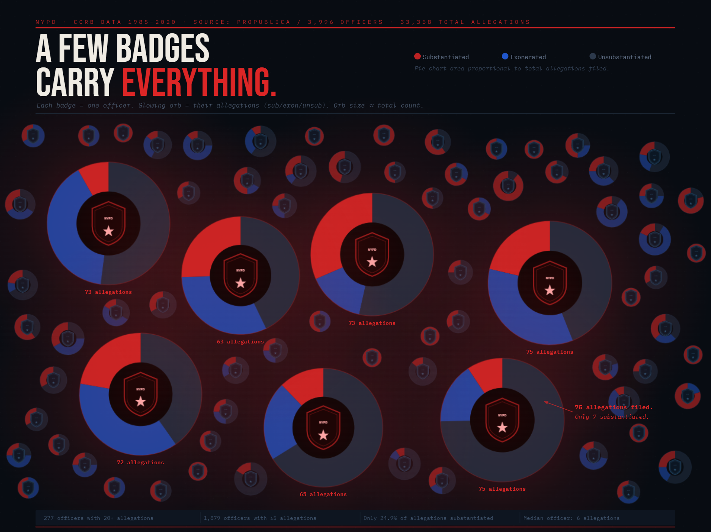
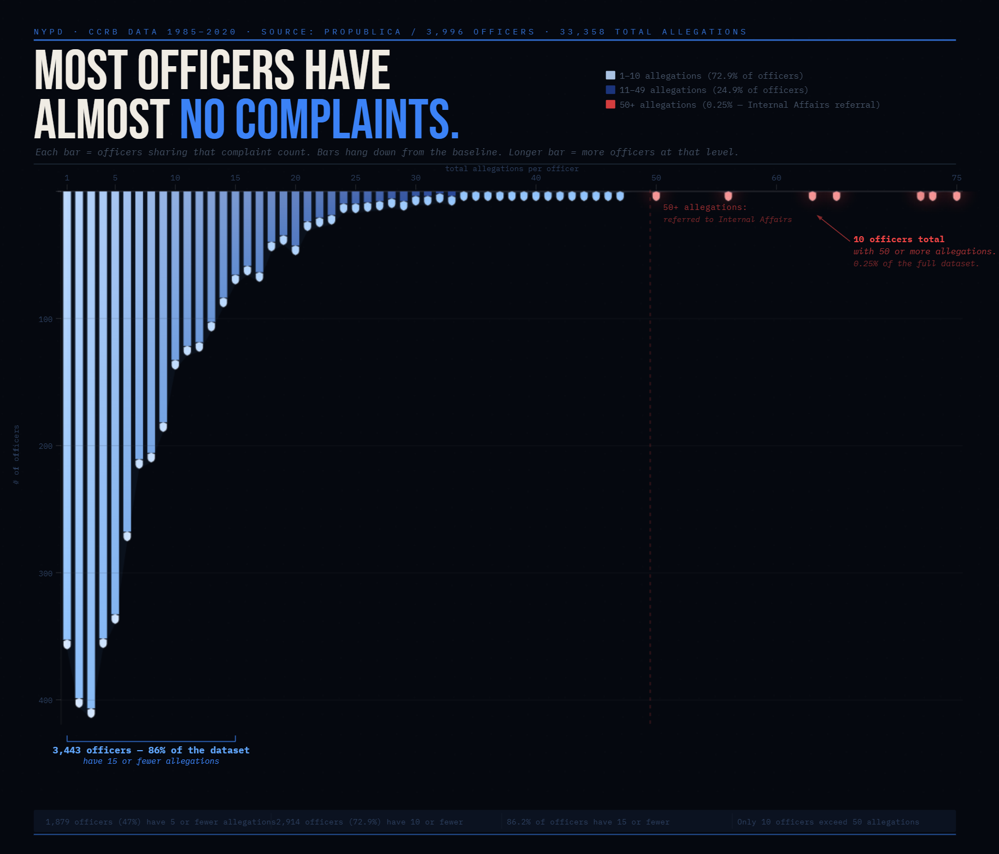

Vis & Society 2026 · Assignment 4

Fig. 1 — Each badge represents one NYPD officer. The orb encodes complaint outcomes (red = substantiated, blue = exonerated, dark = unsubstantiated); orb area is proportional to total allegations. Seven heavy-offender badges glow red against a field of 70 typical officers with small, dim orbs.
The ProPublica dataset only covers officers still on the force as of June 2020 who had at least one substantiated allegation. This means every single officer shown, including the small-orb "typical" officers, is already filtered to the most complaint-heavy slice of the full NYPD. A viewer naturally reads the sea of small badges as representing the average officer, but they do not. This framing serves the FOR stance and is genuinely how the public data was released, but it meaningfully overstates complaint prevalence across the full department.
The radius of each orb was set so that its area scales with total allegation count (radius proportional to the square root of total), which is the perceptually correct encoding for circles. This makes the heavy-offender orbs feel large without exaggerating them beyond what the data supports. An alternative was to scale radius linearly with total, which would have made the largest orbs even more visually dominant, but that would have been misleading. The area-proportional approach is earnest and still produces a striking visual contrast: a 75-allegation officer has roughly 6 times the area of a 12-allegation officer.
The atmospheric red glow radiating from the seven largest orbs is a purely aesthetic amplification. It signals danger and draws the eye before the viewer reads a single label, priming them to interpret those badges negatively. There is no data behind the glow radius; it is decorative. I considered applying a neutral white glow to all orbs to indicate "active" officers, but the red-only version is far more persuasive for the FOR stance. It is a mild deception because it adds emotional weight without informational content.
The title is an editorial claim, not a neutral description. "Carry Everything" implies burden and disproportionality, nudging the reader toward the FOR interpretation before they engage with the visual at all. The subtitle reinforces this by describing the orb as "glowing," a word with connotations of heat and alarm. An earnest alternative title would be something like "Distribution of CCRB Allegations by Officer," but that reads as a chart label, not an argument. For a persuasive visualization this framing is intentional, but it is unambiguously a slant.
Red is viscerally associated with wrongdoing, warning, and guilt. Assigning it to "substantiated" is technically accurate but exploits the preexisting cultural valence of the color. A more neutral design might use a sequential palette or avoid red entirely. The choice of dark, receding slate for unsubstantiated cases also visually minimizes the fact that most allegations, even on the worst officers, were not confirmed. I considered a neutral gray-to-orange scale, but the red/blue/slate split is more immediately legible and more persuasive for the FOR stance, at the cost of some emotional loading.

Fig. 2 — Each bar represents officers sharing the same total allegation count. Bars hang downward from a top baseline; longer bars mean more officers at that level. Blue bars (1-49 allegations) dominate; red bars (50+, flagged for Internal Affairs referral) are barely visible stubs at the far right.
In a conventional histogram, tall bars feel dominant and alarming. By flipping the axis so bars hang downward, the longest bars (representing the most officers) now occupy the visual center of gravity calmly, like weight at rest. The short stubs at the far right feel marginal and almost easy to miss. The same data in a standard upward bar chart reads as a dramatic spike followed by a worrying tail, while the inverted version reads as a stable majority with a negligible fringe. A horizontal ranked bar chart was considered, but it would have lost the continuous distribution shape that makes the long-tail argument so immediate.
Marking only the 10 officers with 50+ allegations in red restricts the alarm color to 0.25% of the dataset, making the red zone look like a nearly invisible artifact at the far right. The Internal Affairs referral framing gives this cutoff an institutional justification that sounds procedural rather than editorial, which softens how arbitrary it actually is. The CCRB data does not define a formal 50-allegation threshold in its own documentation. This boundary was chosen because it produces the most persuasive visual outcome for the AGAINST stance. Setting the threshold at 30 would have colored 88 officers red instead of 10, significantly undermining the "tiny fringe" argument.
The chart presents itself as a picture of the full NYPD officer complaint record, and a viewer naturally reads the leftmost bars as "officers with almost no complaints." But every single officer in this dataset was included precisely because they had at least one substantiated allegation. Officers with entirely clean records were excluded from the ProPublica release entirely. The 360 officers shown at count=1 are not low-complaint officers in any absolute sense; they are the lowest-complaint tier within an already-filtered population. This is the most deceptive element of the visualization, inherited from the dataset's structure rather than any active choice we made, but we made no effort to disclose it, and the framing actively encourages the wrong inference.
Blue carries connotations of calm, trust, order, and institutional legitimacy, especially in a law enforcement context. Applying it to the vast majority of officers primes the viewer to read them as professional and unproblematic before engaging with any numbers. An earnest alternative would be a neutral gray or a sequential single-hue scale without strong cultural associations. The gradient deepening from pale sky blue at low complaint counts to deep navy at higher ones also subtly normalizes officers with 10 or 20 allegations by keeping them in the same calm family as officers with 1 or 2, rather than marking that transition as a warning.
The title states the AGAINST conclusion as a factual observation rather than an interpretation, giving it rhetorical authority it has not fully earned. "Almost no complaints" is doing meaningful work: an officer with 12 allegations would not be described that way in plain language, but they fall within the large blue majority of the chart. The title also omits the dataset's pre-filtering, so a reader who does not examine the footnotes will accept it as a description of the NYPD at large. A more neutral title like "The Complaint Record Is Heavily Concentrated" would describe the same pattern the FOR visualization uses to argue the opposite, which would have been confusing rather than persuasive.
The straightforward part was building the FOR visualization. Once I had a clear proposition and a strong visual metaphor (badges overwhelmed by pie charts) the design decisions fell into place quickly. The harder challenge was the AGAINST visualization. This is because the same dataset genuinely supports both readings. Crafting a visual that feels honest while still being persuasive required more deliberate choices about what to foreground and what to let recede into the background. What surprised me most was how much persuasive work the dataset's pre-filtering does before any design choice is made at all. The ProPublica release only includes officers with at least one substantiated allegation, meaning every officer in both visualizations is already in the most complaint-heavy slice of the full NYPD. The FOR visualization uses that framing to make concentrated complaints feel systemic; the AGAINST visualization lets the distribution shape imply that even complaint-heavy officers are mostly minor cases. Neither visualization discloses this filter prominently, and both are more persuasive because of that omission, which is itself a finding worth sitting with.
Working on both sides of the same proposition forced a more honest definition of "ethical analysis and visualization" than I would have reached otherwise. I'd now define it as: making every design choice you could defend in full daylight, including the ones that serve your argument. The line between acceptable persuasion and misleading visualization is not entirely about whether you have an opinion --- all visualization encodes a perspective. I see it as whether your choices exploit what the viewer cannot see. Truncating an axis to exaggerate a trend is misleading because the viewer has no way to detect it without the raw data. Choosing blue for calm and red for alarm is persuasive but visible. A careful reader can name exactly what you did. The hardest cases are omissions like ours: not lying about the data, but not volunteering that the population shown is already pre-filtered in ways that quietly undermine the apparent conclusion. That feels like the true gray zone, where the distinction between "acceptable" and "misleading" collapses into a question of how much you trust your audience to go looking for what you left out, and how much responsibility you're willing to take for what they don't.